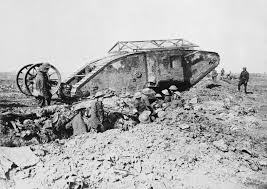

Híres Fegyverek

Maxim Géppuska
Az első modern géppuska, amely teljesen megváltoztatta a hadviselést. Percenként több száz lövést tudott leadni.

Brit Mark I Tank
Az első harckocsik 1916-ban jelentek meg. A céljuk a lövészárkok áttörése volt.

Vegyi Fegyverek
A mustárgáz és más mérgező gázok az első világháború legrettegettebb fegyverei közé tartoztak.

Mannlicher Puska
Az Osztrák–Magyar Monarchia katonáinak egyik legfontosabb fegyvere.